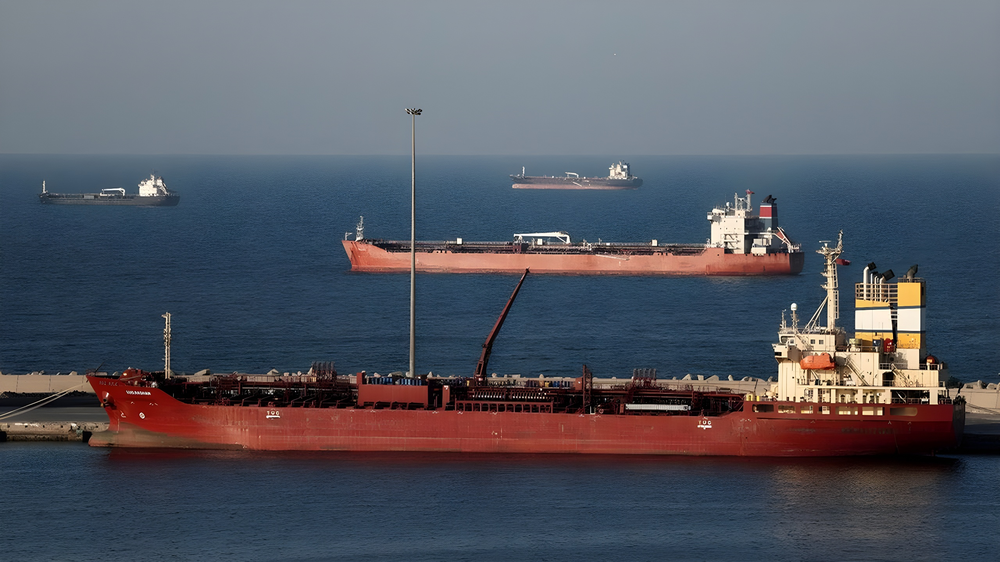

Le 28 février 2026, une coalition américano-israélienne lance des frappes massives sur l'Iran dans le cadre des opérations « Fureur épique » et « Lion rugissant ». En représailles, Téhéran ferme le détroit d'Ormuz, déclenchant une crise énergétique mondiale. Un cessez-le-feu de deux semaines est proclamé le 8 avril sous médiation pakistanaise, mais le détroit reste bloqué et les négociations demeurent au bord du gouffre.
La guerre de 2026 ne surgit pas du néant. Depuis le retrait américain de l'accord nucléaire de Vienne (JCPOA) en 2018 sous Trump, puis à nouveau après le retour de celui-ci à la Maison-Blanche en janvier 2025, les tensions entre Washington et Téhéran n'ont cessé de s'accumuler. En janvier et février 2026, des négociations ont lieu à Mascate le 6 février puis à Genève le 27 février — sans aboutir. Le 3 février, six canonnières des Gardiens de la révolution islamique (CGRI) tentent de saisir un pétrolier américain, le Stena Imperative, dans le détroit d'Ormuz ; l'USS McFaul en assure l'escorte et un F-35 abat un drone iranien approchant d'un porte-avions.
Le 5 février, la marine du CGRI saisit deux pétroliers étrangers près de l'île Farsi. Le 14 février, Trump annonce le déploiement d'un second groupe de porte-avions, l'USS Gerald R. Ford. Le 28 février à 2h30 (heure de Washington), Trump annonce le début des opérations militaires. L'Iran répond par l'opération « Promesse honnête 4 », une vague de représailles massives à travers la région, sur Chypre et le Caucase.
La fermeture du détroit d'Ormuz par l'Iran constitue l'arme économique la plus redoutable de Téhéran. Ce passage maritime d'environ 55 kilomètres de large à son point le plus étroit, situé entre l'Iran au nord et les Émirats arabes unis et Oman au sud, est le point de transit d'environ 21 % du pétrole mondial et d'une part considérable du GNL asiatique. Son blocage prive instantanément les marchés mondiaux des exportations saoudiennes, émiraties, irakiennes, koweïtiennes et qataries.
La crise énergétique déclenchée est immédiate et structurelle : les prix du brut bondissent, les économies importatrices — Europe, Japon, Corée du Sud, Inde — sont directement frappées. Les pays du Golfe, qui dépendent eux-mêmes du détroit pour leurs revenus pétroliers, se trouvent pris en étau, tandis que les États-Unis cherchent à maintenir une pression militaire sans déclencher une escalade incontrôlée.
Reprise des négociations irano-américaines sur le nucléaire. Parallèlement, déploiement d'une « armada » américaine dans le Golfe Persique annoncé par Trump. Incidents navals répétés dans le détroit d'Ormuz.
Lancement des frappes américano-israéliennes sur l'Iran à 2h30. Trump annonce l'opération sur Truth Social. L'Iran riposte massivement. Des missiles iraniens visent Israël et des pétroliers au large d'Oman.
Le conflit s'étend : Liban, Caucase, île de Chypre touchés par les représailles iraniennes. La crise humanitaire s'aggrave. Plusieurs milliers de morts sont recensés, près d'un million de déplacés.
Cessez-le-feu de deux semaines sous médiation pakistanaise. L'Iran soumet une proposition en dix points. Washington accepte ce texte comme base de discussion, sans garantie sur la réouverture d'Ormuz.
Le 19 avril, les États-Unis arraisonnent un cargo iranien, le Touska, provoquant une crise dans les négociations. Trump prolonge sine die le cessez-le-feu le 21 avril. L'Iran réitère qu'Ormuz ne rouvrira pas tant que le blocus maritime américain se poursuivra.
Le cessez-le-feu du 8 avril repose sur une architecture diplomatique inédite : le Pakistan, pays musulman disposant de l'arme nucléaire et entretenant des relations avec les deux parties, s'impose comme médiateur. L'Iran y présente une proposition en dix points que Washington accepte comme base de discussion — sans que cela signifie un accord de principe sur le fond. Les points clés portent sur la suspension des enrichissements d'uranium à haute teneur, les garanties de non-agression américaines, la levée des sanctions, et la réouverture d'Ormuz en contrepartie d'un retrait du blocus naval américain.
En maintenant la fermeture d'Ormuz, l'Iran s'assure un levier de négociation maximal, mais s'expose à deux risques majeurs. D'une part, les pays du Golfe — Arabie saoudite, EAU, Koweït, Qatar — dont les exportations sont aussi bloquées, sont poussés vers une neutralité hostile à Téhéran, voire une coopération logistique accrue avec les Américains. D'autre part, la pression économique sur l'Iran lui-même s'intensifie : le pays a besoin de vendre ses propres hydrocarbures pour financer l'effort de guerre.
Pour Washington, la tentation d'une nouvelle campagne de frappes ciblées sur les infrastructures du CGRI le long du détroit est réelle — l'armée américaine aurait reçu des ordres de préparation en ce sens. Mais une escalade risquerait d'embraser toute la région et de provoquer une crise énergétique prolongée que ni l'Europe ni l'Asie ne pourraient absorber sans récession.
| Acteur | Position | Intérêt principal |
|---|---|---|
| Iran | Fermeture d'Ormuz | Levier de négociation nucléaire |
| États-Unis | Blocus naval | Pression maximum, éviter escalade |
| Israël | Frappes sur capacités militaires et nucléaires iraniennes | Destruction programme nucléaire et missiles |
| Pays du Golfe | Neutralité active | Réouverture Ormuz, stabilité |
| Pakistan | Médiation | Influence régionale, stabilité |
Le conflit déborde largement le cadre irano-américain. Le Liban subit de nouvelles violences, avec des centaines de victimes civiles. Chypre est touchée par des frappes de représailles. Le Caucase, déjà fragilisé, entre dans une zone de turbulences. Les Nations unies condamnent les frappes initiales comme contraires à la Charte de l'ONU — Antonio Guterres prend la parole dès le 28 février devant le Conseil de sécurité. Mais aucune résolution contraignante n'est votée, les vetos russe et chinois paralysant la chambre.
Sur les marchés, le choc est immédiat : la prime de risque géopolitique sur le pétrole atteint des niveaux inédits depuis 2008. Les compagnies d'assurance maritime suspendent ou renchérissent drastiquement leurs couvertures dans le Golfe Persique. La chaîne d'approvisionnement énergétique mondiale est structurellement déstabilisée tant qu'Ormuz reste fermé.
« Une réouverture du détroit d'Ormuz est impossible tant que le blocus maritime américain se poursuit. »
— Porte-parole du gouvernement iranien, 21 avril 2026« Nous nous préparons à toutes les options si les négociations échouent. »
— Responsable militaire américain, cité par Reuters, avril 2026La guerre de 2026 marque un seuil : pour la première fois depuis 1991, une coalition menée par les États-Unis frappe directement un État du Moyen-Orient qui n'est pas sous occupation. Elle révèle la fragilité de l'architecture de sécurité régionale — aucune institution, ni l'ONU ni la Ligue arabe, n'a pu prévenir l'escalade. Le cessez-le-feu du 8 avril est moins un accord de paix qu'une pause armée : le sort d'Ormuz, clé de voûte de l'économie énergétique mondiale, reste suspendu à des négociations dont l'issue est, au 27 avril 2026, plus incertaine que jamais.